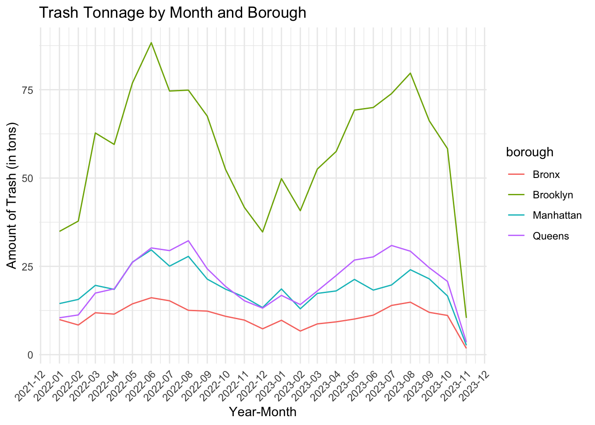

EDA
Exploratory Data Analysis
Cleaning rat sightings dataset
Show underlying code
Show underlying
code
Data Cleaning for Waste Tonnage data (N)
Merging rat sightings and waste tonnage data (N)
filtering out the N/A’s in a dataset (B)
plot 1: total trash by borough for 2022 and 2023 (B)
waste_tonnage_by_borough = rat_waste_filtered |>
group_by(borough) |>
summarise(total_tonnage = sum(total_organics + total_refuse))
ggplot(waste_tonnage_by_borough, aes(x = reorder(borough, -total_tonnage), y = total_tonnage)) +
geom_bar(stat = "identity", fill = "blue") +
labs(x = "Borough", y = "Trash Tonnage", title = "Trash Tonnage by Borough, 2022 - 2023") +
theme_minimal() +
theme(axis.text.x = element_text(angle = 45, hjust = 1))bar graph by total refuse and total organics (had to separate b/c they are on a different scale) (B)
waste_by_borough_refuse <- aggregate(total_refuse ~ borough, data=waste_tonnage, sum)
# barplot for total refuse
barplot(waste_by_borough_refuse$total_refuse,
main="Total Refuse Production by Borough",
xlab="Borough",
ylab="Total Refuse (tons)",
col="blue",
names.arg=waste_by_borough_refuse$borough,
las=2)
waste_by_borough_organics <- aggregate(total_organics ~ borough, data=waste_tonnage, sum)
# barplot for total organics
barplot(waste_by_borough_organics$total_organics,
main="Total Organics Production by Borough",
xlab="Borough",
ylab="Total Organics (tons)",
col="green",
names.arg=waste_by_borough_organics$borough,
las=2)plot 2: trash by borough & month (B)
total_tonnage_by_borough_year_month = rat_waste_filtered |>
group_by(borough, year, month) |>
summarise(total_tonnage = sum(total_organics + total_refuse))## `summarise()` has grouped output by 'borough', 'year'. You can override using
## the `.groups` argument.total_tonnage_by_borough_year_month$year_month <- as.Date(paste(total_tonnage_by_borough_year_month$year, total_tonnage_by_borough_year_month$month, "01", sep = "-"))
ggplot(total_tonnage_by_borough_year_month, aes(x = year_month, y = total_tonnage, group = borough, color = borough)) +
geom_line() +
labs(x = "Year-Month", y = "Amount of Trash (in tons)", title = "Trash Tonnage by Month and Borough") +
scale_x_date(date_labels = "%Y-%m", date_breaks = "1 month") +
scale_y_continuous(labels = scales::number_format(scale = 1e-6)) +
theme_minimal() +
theme(axis.text.x = element_text(angle = 45, hjust = 1))